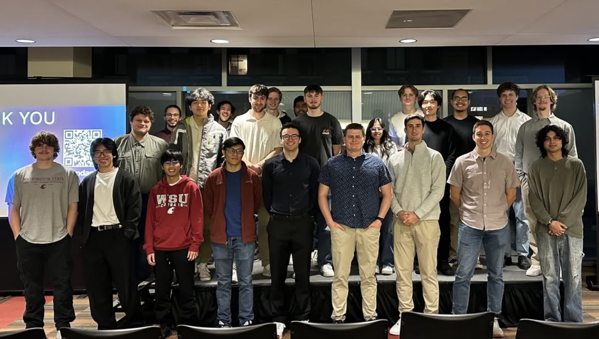

About Us
The Software Development Club is dedicated to fostering a community of coding enthusiasts at our school. We focus on collaborative learning, projects, and developing real-world skills. We have dozens of members at all skill levels, and we invite you to come join us for a meeting every Tuesday at 5:30! Please join our Discord for meeting location and details in case you miss any.

How to Join
We're open to all students! Join us every Tuesday at 5:35 PM. Location is not set each week, so please check into the Discord to stay updated on meeting locations. No prior experience is necessary.
Current Projects
- UREC App: An app for WSU's Recreation Center for android and IOS devices that will allow users to view a crowdmeter, checkout rec resources, sign in to the rec, create rec accounts, sign up for intramurals, and more.
- Best By App: The app helps users manage their food items by notifying them 2 days before their products expire. It allows users to scan food items and store expiration dates, making food management easier and more efficient..
- Stock Market Bar: This app is designed for use in a bar to add an exciting and interactive "stock market" appearance to buying drinks. Various drinks will fluctuate in price and will feature their own tickers and graphs.
Contact Us
Email: wsu.software.development.club@gmail.com
Follow us on social media: